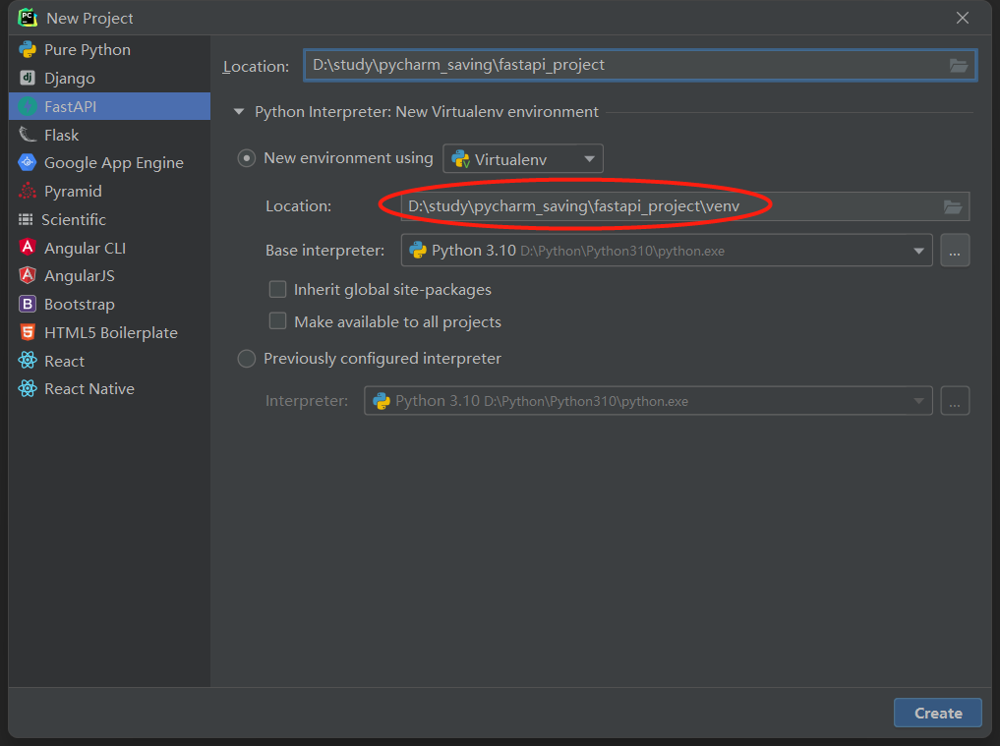

环境配置与创建项目
1 创建项目
这次不和django一样创建项目，而是直接使用pycharm将虚拟环境放在项目目录下（django其实也可以这样）。

本来是要进入虚拟环境，然后安装fastapi全家桶的，像下面这样：
(venv) D:\study\pycharm_saving\fastapi_project>pip install "fastapi[all]"全家桶包括了
uvicorn，可以将其用作运行代码的服务器。
但pycharm在新建fastapi项目的时候就已经帮我们安装好了，所以就省了功夫。
创建完后的项目结构：
fastapi_project
│ main.py
│ test_main.http
│
└─venv
│ .gitignore
│ pyvenv.cfg
│
├─Lib
│ └─site-packages
│
└─Scripts
activate
activate.bat
activate.fish
activate.ps1
activate.xsh
activate_this.py
deactivate.bat
dotenv.exe
pip-3.10.exe
pip.exe
pip3.10.exe
pip3.exe
pydoc.bat
python.exe
pythonw.exe
uvicorn.exe
watchfiles.exe
wheel-3.10.exe
wheel.exe
wheel3.10.exe
wheel3.exe